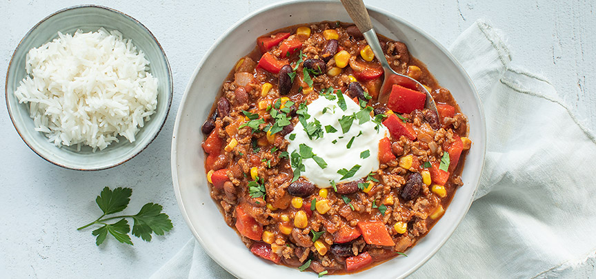

Chilli con carne

Ingrediënten
- 1 grote ui
- 2 rode paprika's
- 2 eetlepels kruidenmix voor chilli con carne
- 1 eetlepel olijfolie
- 500 gr rundergehakt
- 450 gr rode/bruine bonen
- 1 blik tomatenblokjes a 400 gr
- 1 klein blikje tomatenpuree
- 200 ml gezeefde tomaten
- 1 klein blikje mais a 150 gr
- 250 ml zure room
- peterselie (fijngehakt)
- 300 gr rijst voor erbij
Bereiding
- Snipper de ui en bak deze in een grote (wok)pan met een beetje olie of margarine. Voeg het gehakt toe en bak dit rul. Voeg 2 eetlepels van de chili con carne kruidenmix toe. Snijd de rode paprika’s in stukjes en bak een paar minuten mee. Doe dan de tomatenpuree, tomatenblokjes en gezeefde tomaten erbij en roer alles goed door elkaar.
- Laat dit mengsel 10 minuten pruttelen. Kook ondertussen ook de rijst gaar. Doe dan de bonen en mais bij de tomatensaus met gehakt en laat nog 10 minuten pruttelen. Serveer de chili con carne met een flinke schep zure room, wat fijngehakte peterselie en rijst.